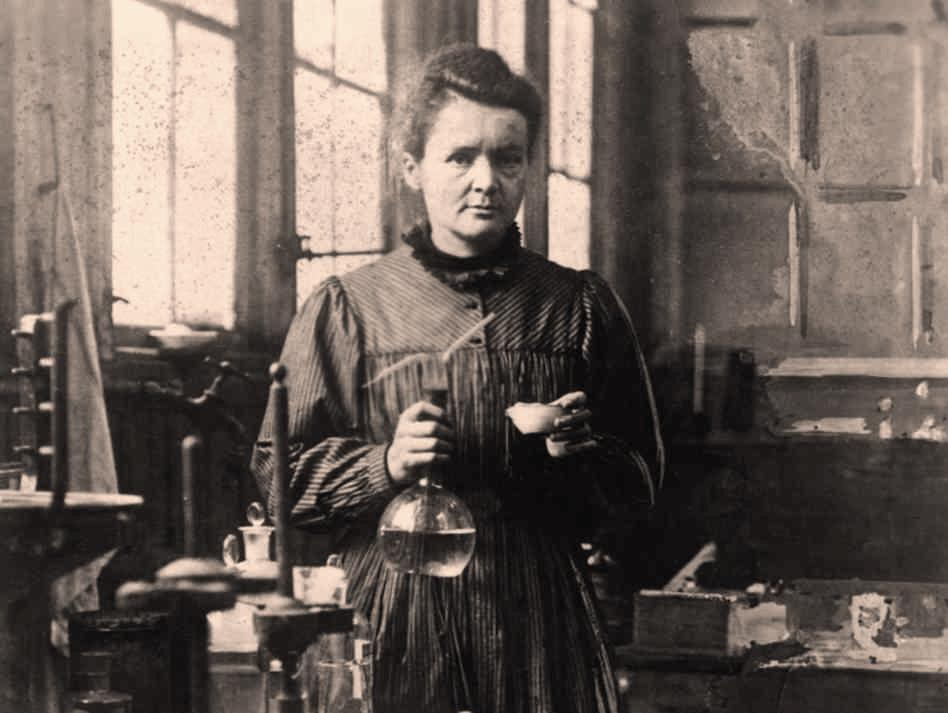
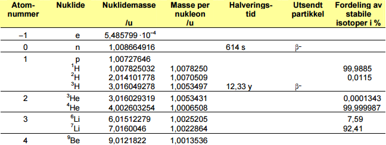
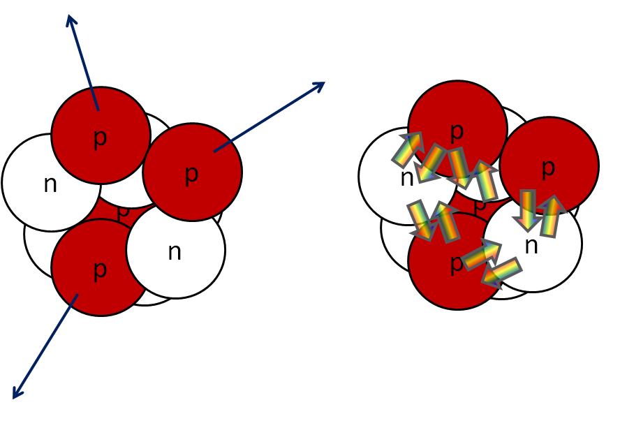
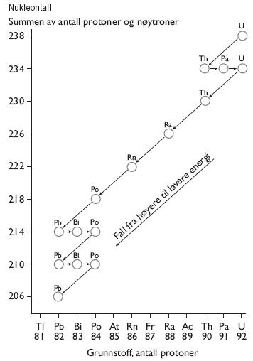
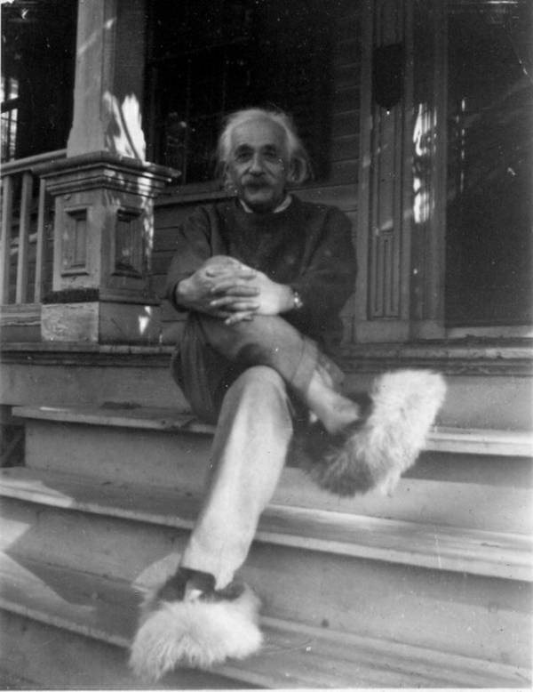
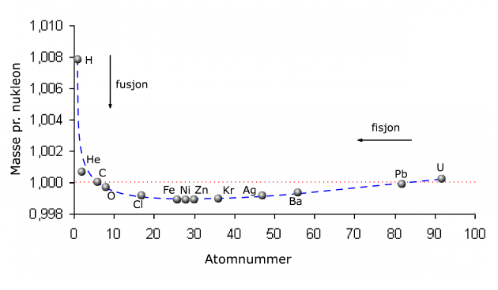

Kjernefysikk
Spørsmål

Hva er radioaktiv stråling?
Energi som er sendt ut fra en atomkjerne
"Betastråling er det som oppstår når et atom tilføres sin ioniseringsenergi"
Nei, det er når et nøytron omdannes til et proton og elektron
Hva har høyest masse av et proton og et nøytron?
Et proton
Hva har høyest masse av et nøytron og et proton?
Et nøytron, så vidt
Atomkjernen
En atomkjerne består av protoner og nøytroner.
- Antallet protoner kalles protontallet, \(Z\).
- Antallet nøytroner kalles nøytrontallet, \(N\).
Antallet nukleoner i kjernen kaller vi nukleontallet, \(A\). Vi har
\(A = Z + N\).
En atomkjerne, \(X\), med \(Z\) protoner og \(A\) nukleoner skriver vi som
\(^{A}_{Z}X\).
- Hvor mange elektroner har et nøytralt atom rundt kjernen?
- \(Z\)
Vi utelater ofte \(Z\), da vi også kan se dette fra symbolet til grunnstoffet.
- Hva er \(Z\) for karbon?
- \(Z = 6\) for karbon, da dette er det sjette grunnstoffet.
- For karbon-14, skriver vi da ofte \(^{14}C\).
Nukleonene
Både nøytronet og protonet har en masse på tilnærmet \(1 u\).
\(u\) kalles atommasseenheten og er definert som \(1/12\) av massen til \(^{12}C\).
\(u=1,66\cdot 10^{-27} \text{kg}\).
Fysikktabellen

- Finn nuklidemassen til \(^{15}N\) utfra fysikktabellen og periodesystemet. Hvordan forklarer du eventuelle avvik?
- Periodeystemet tar utgangspunkt i gjennomsnittsmasser for de isotopene vi finner i naturen.
Krefter i en atomkjerne
Hvorfor sprenger ikke protonene atomkjernen?
Den sterke kjernekraften
De elektromagngetiske kreftene skyver protonene fra hverandre, den sterke kjernekraften holde dem sammen.

Ja, det finnes også en svak kjernekraft.
Blir atomene for store, "vinner" de elektromagnetiske kreftene.
- Vismut-209 er den tyngste stabile atomkjernen
- Radioaktivitet omdanner alle tyngre atomkjerner
Hvor mange nøytroner er det i vismut-209?

- Hva viser figuren?
Bevaringslover


Bevaring av energi
- \(E_0 = mc^2\)
- Totalenergien i en kjernereaksjon er bevart, \(E=E_0 + E_k + E_\gamma\)
- \(E_k\) er den samlede kinetiske energien
- \(E_\gamma\) er strålingsenergien til eventuelle gammafotoner
Hva er massen til to protoner og to nøytroner? Skiller dette seg fra massen til \(^{4}\text{He}\)?
Ulike nuklider har ulik masse per nukleon. Hva kommer dette av?

Bevaring av ladning og nukleontall
- Ladningen er bevart i alle kjernereaksjoner
- Nukleontallet er bevart i alle kjernereaksjoner
- Totalenergien er bevart i alle kjernereaksjoner